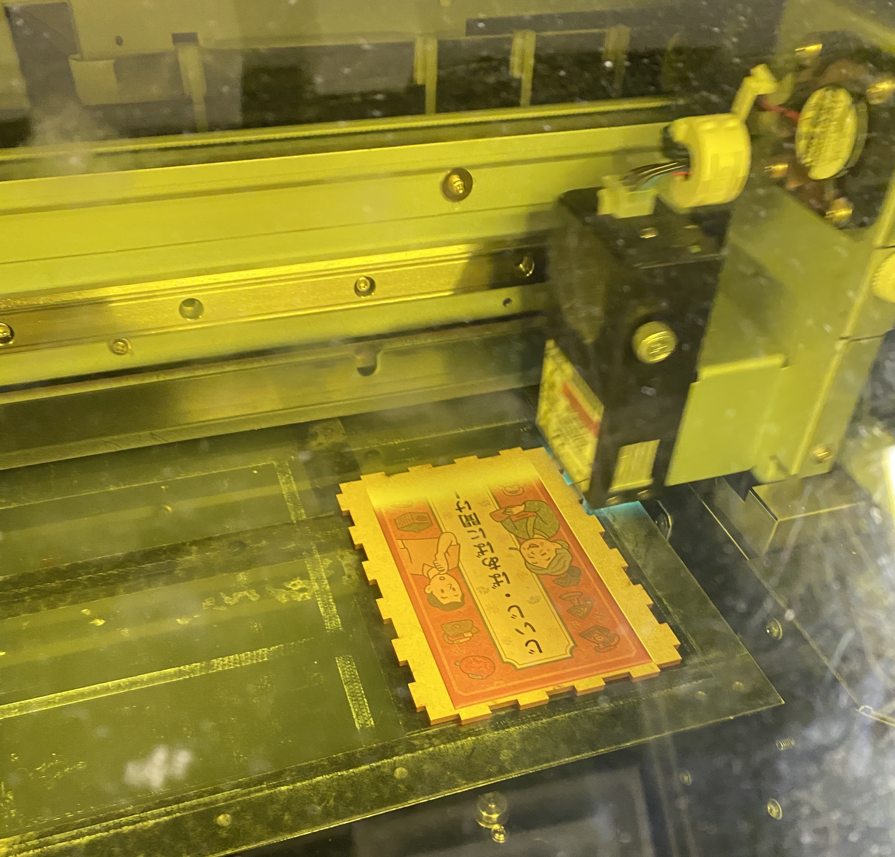

２０２５年１０月３日
【やったこと】
- 今後のスケジュール確認
- Community Loopsについて()
- ドキュメンタリー映画『リペアカフェ』視聴
- 感想共有
- 現在の取り組みと課題の共有(CYKLUS平田さん)
- 次回までの課題共有
今後のスケジュール確認
Phase１： ナッジと環境省のプロジェクト、どちらか一つを選択。環境省のプロジェクトに参加することにした。
【神奈川大学 お知らせ 2025.09.22】
環境省採択プロジェクト「Community Loops」に本学が協力します【環境省のプロジェクトの今後のスケジュール】
１０月 ３日 キックオフ 問題共有
１０月１０日 テーマ決め
１１月２１日 中間発表
１２月下旬か１月上旬に最終発表
世代間交流班プロダクト制作完成
ななみが夏休み中にデザイン制作、印刷までやってきてくれた。なので、デザインを印刷した紙を厚紙(台紙)に貼った。
カードケースをMDFで作成。(レーザーカッター・UVプリンタ使用)
レーザーカッターでMDFを切る際に使用したサイトは「MakerCase
Basic Boxを使用。
ここで、サイズはあっていたが、接着剤を使用しないと外れることが判明し、接着剤で箱を形成。
※MDFのデータは、はめ込む側を1.0cm、はめ込まれる側を0.97㎝と0.3mm変えると綺麗にはまりやすいとファブラボのスタッフの方にアドバイスをもらった。
カードケースのデザインは、AIで生成したものにカードゲームのタイトルを当てはめた。
UVプリンタのデータは、外枠、裏白、デザインの３つのデータが必要。
※イラストレーターで使えるショートカットキーについて教えてもらった。
コントロールA⇒全選択
シフト押しながら削除したい部分を選択
コントロールG⇒グループ化
整列で、縦横両方真ん中にした。

.jpg)
.jpg)
ゼミ時間外活動
２０２５年９月２４日
鎌倉市ゴミ問題班
動画撮影、音声録音。【担当】
キャスト：いつき・あやな
カメラマン：ももか
動画編集:きいち
まず、顧客視点に立って考えたい。 服を捨てる時、１枚１枚捨てないし、大事なものは取っておく。 だから、まとめて捨てる人が多い。 ストーリータグは必要ない。 ゴミを出すのが楽な世界。曜日決まってるし、捨て方も決まってる。そしたらゴミに出す。 服は重いし、まとめた服を遠くまで出しに行く人はいない。 近くに出せるところがあるべき。地域循環を目標にしてるならなおさら！ 服を買う側で考えると、選ぶ楽しみがある。選べるようにする。 捨てる服には、ただ着なくなった服もあるから。 そうじゃなくて、修理が必要だったり、シミがついててクリーニングが必要だったりするものは後で回収する。 捨てる時、それを分けて袋に入れてもらうだけにする。 服を捨てる人の手間を省くべき。 だから、ゴミ箱と均等な感覚に服回収場を設けるべき。そして、通りがかりの人が自分が欲しい者を手にできるようにする。 高級店とか、入りにくい傾向があるように、分からない店に人は入らない。 だから、店舗を設けると人は寄り付かないと考える。 だからと言って、外に長時間服を置いているとそれなりのダメージがある。 そこも改善点が必要だと現段階では考えているところ。(2025/10/5 10:46)